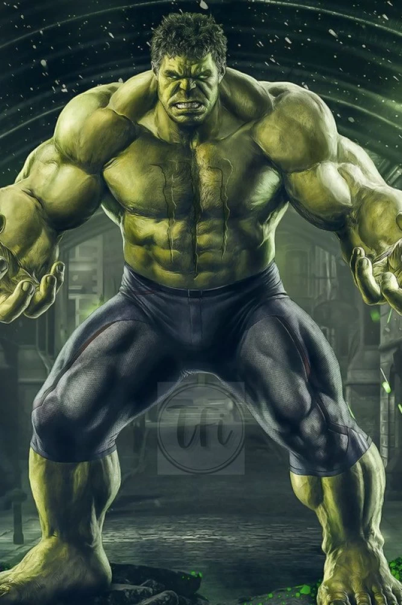
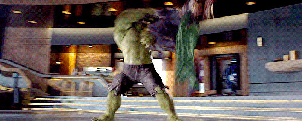

Quem foi o Hulk?
Na história original dos quadrinhos, o Hulk é um selvagem e poderoso alter ego do Dr. Robert Bruce
Banner, um cientista que foi atingido por raios gama enquanto salvava um adolescente durante o teste
militar de uma bomba por ele desenvolvida. Este adolescente, Rick Jones, tornou-se companheiro de
Banner, ajudando-o a manter o Hulk sob controle e mantê-lo longe dos ataques dos militares, que viam a criatura como uma ameaça.
Hulk não possuía nenhum acessório, usava somente a sua:
Força
 